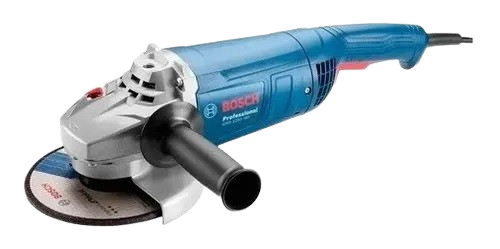

La moladora es una herramienta eléctrica usada para cortar, desbastar o lijar distintos materiales como metal, piedra o cerámica, dependiendo del disco utilizado.
Sujeta la herramienta con ambas manos, coloca el disco adecuado y mantén la moladora a una distancia segura del cuerpo. Trabaja con movimientos controlados y constantes.
Ver video